library(tidyverse)
library(ggplot2)
library(ggthemes)
knitr::opts_chunk$set(echo = TRUE, warning=FALSE, message=FALSE)Final Project: Connor Landreth
final_Project_assignment_1
Sleep_Efficiency
Determinants of Sleep Efficiency
Introduction
Data set Introduction:
The data set contains information about a group of test subjects and their sleep patterns. Each test subject is identified by a unique “Subject ID” and their age and gender are also recorded. The “Bedtime” and “Wake-up time” features indicate when each subject goes to bed and wakes up each day, and the “Sleep duration” feature records the total amount of time each subject slept in hours. The “Sleep efficiency” feature is a measure of the proportion of time spent in bed that is actually spent asleep. The “REM sleep percentage”, “Deep sleep percentage”, and “Light sleep percentage” features indicate the amount of time each subject spent in each stage of sleep. The “Awakenings” feature records the number of times each subject wakes up during the night. Additionally, the data set includes information about each subject’s caffeine and alcohol consumption in the 24 hours prior to bedtime, their smoking status, and their exercise frequency.
The data set provided was collected as part of a study conducted in the UK by a research team from The University of Oxfordshire. The study aimed to investigate the impact of lifestyle factors such as caffeine, alcohol, and exercise on sleep patterns and sleep quality. The research team recruited participants from the local community and collected data over a period of several months. The data was collected using a combination of self-reported surveys, actigraphy, and polysomnography which is a sleep monitoring technique. The data was then analyzed to understand the relationship between lifestyle factors and sleep patterns and to identify any potential areas for intervention to improve sleep.
I am interested in finding sleep inhibitors for young adults, so I’ll filter to ages from 21-35. I would like to look at under 35 more generally, but due to the alcohol and smoking variables, the filter must designate 21 as the minimum age.
Description
getwd()[1] "C:/Github Projects/601_Spring_2023/posts"setwd("C:/Github Projects/601_Spring_2023/posts/ConnorLandreth_FinalProjectData")
sleep <- read.csv("Sleep_Efficiency.csv")
#View(sleep)
#head(sleep)
dim(sleep)[1] 452 15Dimensions on the raw sleep data include 452 observations over 15 variables
length(unique(sleep$ID))[1] 452length(unique(sleep$Age))[1] 61length(unique(sleep$Gender))[1] 2summary(sleep) ID Age Gender Bedtime
Min. : 1.0 Min. : 9.00 Length:452 Length:452
1st Qu.:113.8 1st Qu.:29.00 Class :character Class :character
Median :226.5 Median :40.00 Mode :character Mode :character
Mean :226.5 Mean :40.29
3rd Qu.:339.2 3rd Qu.:52.00
Max. :452.0 Max. :69.00
Wakeup.time Sleep.duration Sleep.efficiency REM.sleep.percentage
Length:452 Min. : 5.000 Min. :0.5000 Min. :15.00
Class :character 1st Qu.: 7.000 1st Qu.:0.6975 1st Qu.:20.00
Mode :character Median : 7.500 Median :0.8200 Median :22.00
Mean : 7.466 Mean :0.7889 Mean :22.62
3rd Qu.: 8.000 3rd Qu.:0.9000 3rd Qu.:25.00
Max. :10.000 Max. :0.9900 Max. :30.00
Deep.sleep.percentage Light.sleep.percentage Awakenings
Min. :18.00 Min. : 7.00 Min. :0.000
1st Qu.:48.25 1st Qu.:15.00 1st Qu.:1.000
Median :58.00 Median :18.00 Median :1.000
Mean :52.82 Mean :24.56 Mean :1.641
3rd Qu.:63.00 3rd Qu.:32.50 3rd Qu.:3.000
Max. :75.00 Max. :63.00 Max. :4.000
NA's :20
Caffeine.consumption Alcohol.consumption Smoking.status Exercise.frequency
Min. : 0.00 Min. :0.000 Length:452 Min. :0.000
1st Qu.: 0.00 1st Qu.:0.000 Class :character 1st Qu.:0.000
Median : 25.00 Median :0.000 Mode :character Median :2.000
Mean : 23.65 Mean :1.174 Mean :1.791
3rd Qu.: 50.00 3rd Qu.:2.000 3rd Qu.:3.000
Max. :200.00 Max. :5.000 Max. :5.000
NA's :25 NA's :14 NA's :6 There are 452 unique IDs, so each row is an individual. Ages 9-69 are explored across the 452 subjects, and 2 genders.
Some important notes to summarize variables, the mean age here is just over 40, so we will filter to look solely at young adults later. Mean sleep duration is about 7.5 hour
The variables are as follows:
ID = a unique identifier for each test
subject
Age = age of the test subject
Gender = male or female
Bedtime = the time the test subject goes to bed each night
Wake up time = the time the test subject wakes up each morning
Sleep duration = the total amount of time the test subject slept (in hours) REM sleep percentage = the percentage of total sleep time spent in REM sleep Deep sleep percentage = the percentage of total sleep time spent in deep sleep
Light sleep percentage = the percentage of total sleep time spent in light sleep
Awakenings = the number of times the test subject wakes up during the night
Caffeine consumption = the amount of caffeine consumed in the 24 hours prior to bedtime (in mg)
Alcohol consumption = the amount of alcohol consumed in the 24 hours prior to bedtime (in Standard Drinks)
Smoking status = whether or not the test subject smokes
Exercise frequency = the number of times the test subject exercises each week
Sleep efficiency = a measure of the proportion of time in bed spent asleep
Questions/Description
Next, I’ll pick from the desired variables above and omit those that won’t lend to the analysis. I am removing sleep and wake time, because those give me the sleep duration, and that is already a variable. Also, ID won’t be necessary, nor will the rem, light, or any other sleep factor beyond duration and efficiency.
n_sleep <- sleep %>%
select(Age, Gender, Sleep.duration, Sleep.efficiency, Awakenings, Caffeine.consumption, Alcohol.consumption, Smoking.status, Exercise.frequency) %>%
filter(Age <= "35"& Age>="21")
head(n_sleep)This data set shows the alcohol and caffeine consumption levels, as well as smoking and exercise levels. I want to see what exactly out of these things causes young adults to lose out on sleep. As someone who has slept poorly essentially forever, I am very interested to see what trends emerge.
I want to see what individual effects all of those things have on sleep. I’m also interested to see if alcohol actually plays a role in advanced sleep for heavy drinkers or if caffeine doesn’t play a role in poor sleep for heavy users because they’ve developed an immunity to it. To answer these questions, I’ll start manipulating the data.
That manipulation left me with 155 observations over nine variables, which is a bit low, but enough to figure out what causes young adults to miss out on sleep. Let us look at some histograms to help visualize averages and trends in the data.
#hist(n_sleep$Caffeine.consumption, col = "lightpink",
# xlab = 'Caffeine Consumption',
# ylab = 'Count') + labs(title = "Histogram of Caffeine Consumption")
hist_caffeine<-ggplot(n_sleep, aes(x= Caffeine.consumption)) +
geom_histogram() +
labs(title = "Histogram of Caffeine Consumption", x = 'Caffeine Consumption (mg.)', y="Count") +
theme_economist()
hist_caffeine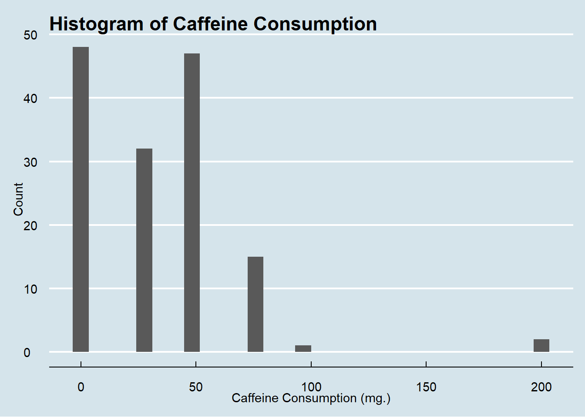
In this filtered out sample of only people 21-35, caffeine consumption is concentrated on the lower end of the spectrum, with nearly all individuals consuming under 100mg for the day, with many consuming zero.
hist_alcohol<-ggplot(n_sleep, aes(x= Alcohol.consumption)) +
geom_histogram() +
labs(title = "Histogram of Alcohol Consumption", x = 'Alcohol Consumption (Standard Drinks)', y="Count") +
theme_economist()
hist_alcohol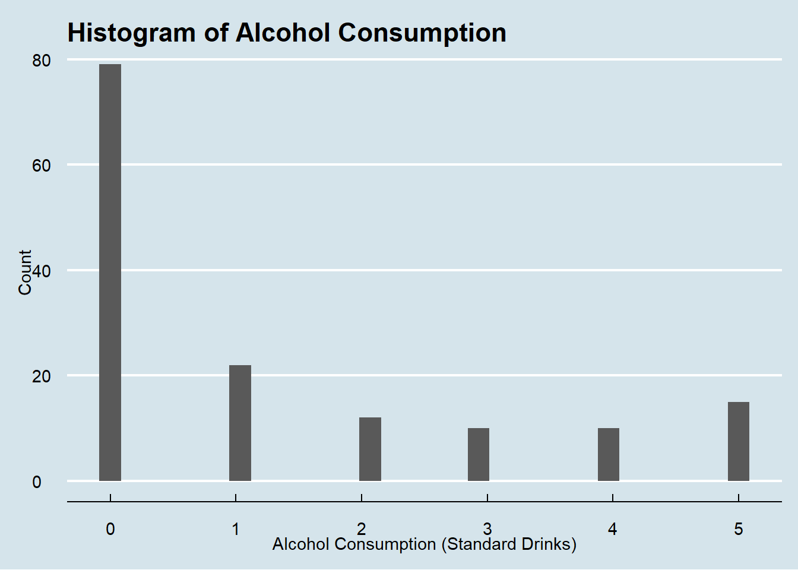
In this filtered out sample of only people 35 and under, alcohol consumption is on the lesser side, with the mass majority consuming little to no alcohol. Many are between zero and one standard drink for the day.
Down below as we look at smoking, I will also mutate those “yes” and “no” responses to 0 and 1 for easier manipulation going forward
require(dplyr)
n_sleep <- n_sleep %>%
mutate(Smoking.status = ifelse(Smoking.status == "No",0,1))
hist(n_sleep$Smoking.status, col = "lightpink",
xlab = 'Smoking Status, 0 = no, 1 = yes',
ylab = 'Count')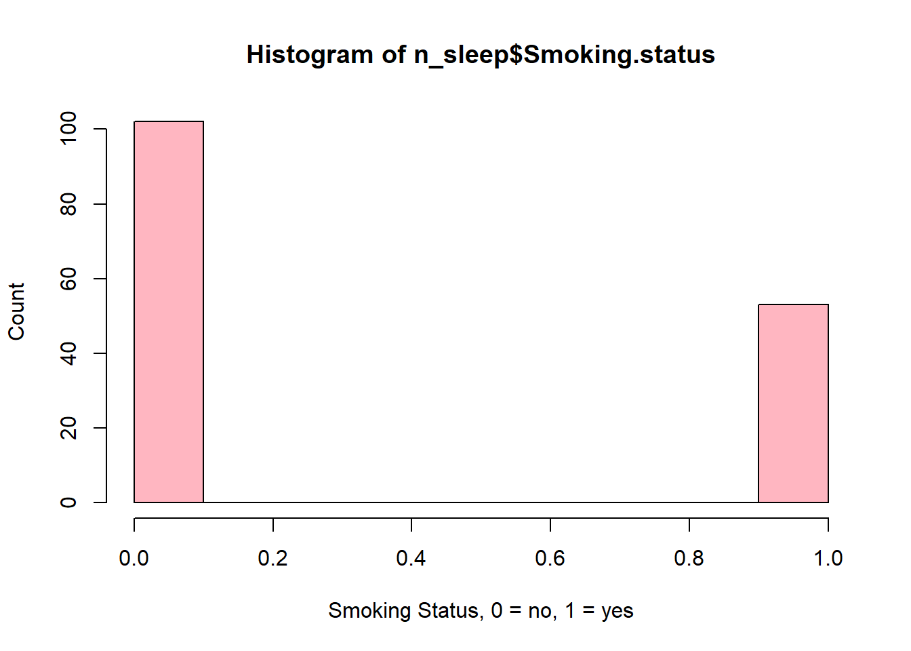
The majority of young people do not smoke, while roughly sixty people 35 and under do engage in smoking.
hist_exercise<-ggplot(n_sleep, aes(x= Exercise.frequency)) +
geom_histogram() +
labs(title = "Histogram of Exercise Frequency", x = 'Exercise Frequency', y="Count") +
theme_economist()
hist_exercise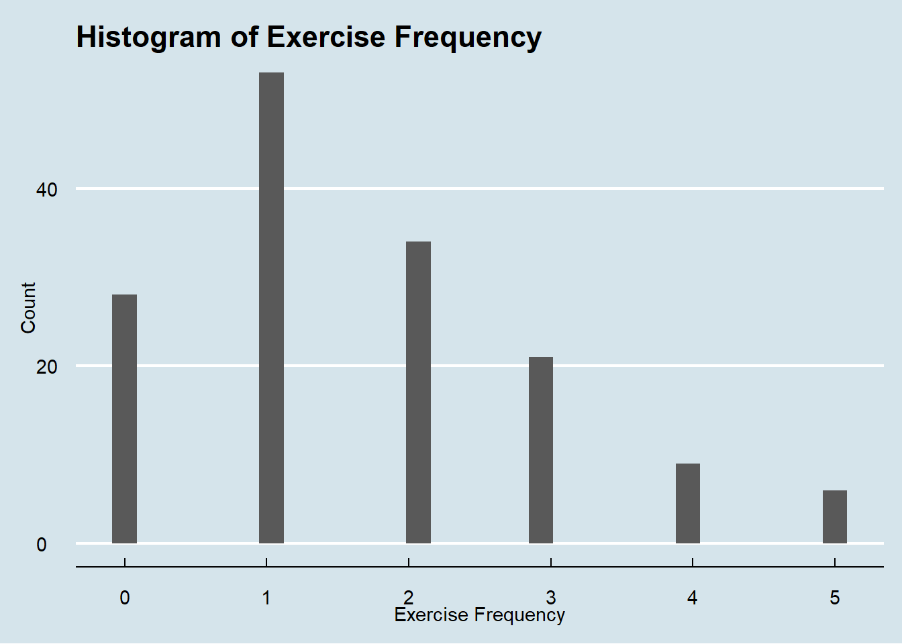
For exercise, most work out 0-1 times per week, with a decreasing trend from 1-5 times per week.
hist_sleep_duration<-ggplot(n_sleep, aes(x= Sleep.duration)) +
geom_histogram() +
labs(title = "Histogram of Sleep Duration", x = 'Sleep Duration (Hours)', y="Count") +
theme_economist()
hist_sleep_duration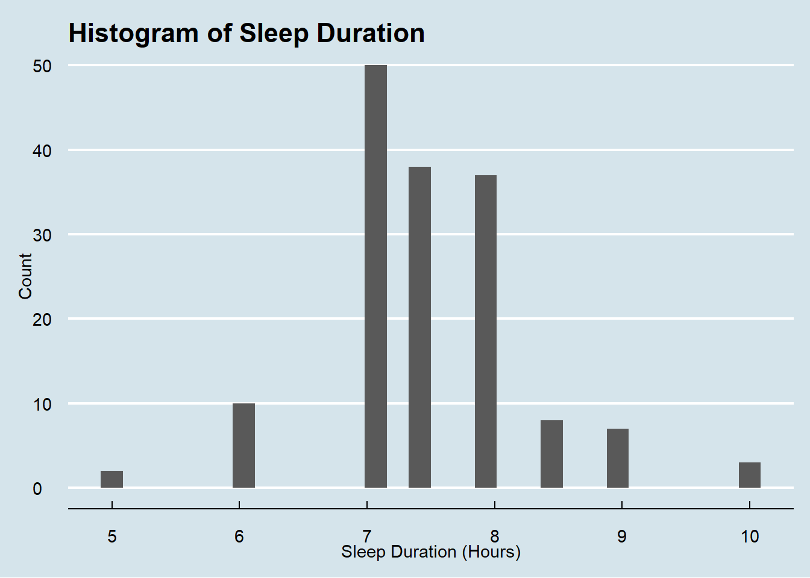
Sleep duration sees a slightly more normal distribution with it’s mean, again, falling right around 7.5 hours a night.
hist_sleep_efficiency<-ggplot(n_sleep, aes(x= Sleep.efficiency)) +
geom_histogram() +
labs(title = "Histogram of Sleep Efficiency", x = 'Sleep Efficiency', y="Count") +
theme_economist()
hist_sleep_efficiency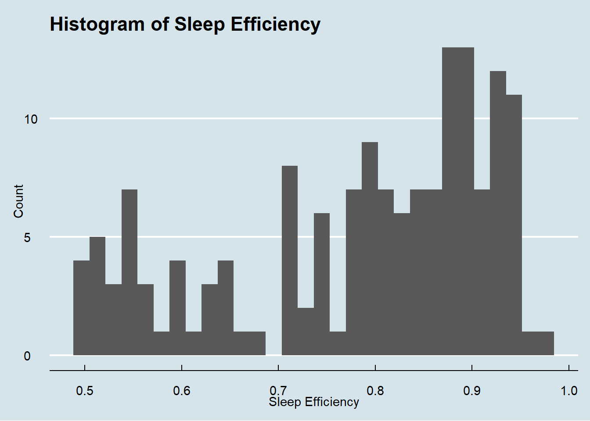
The distribution of sleep efficiency is a bit left skewed, seeing sleep efficiency rated all across the board, but a bit more concentrated on the efficient end. There is a spike at 0.5, signifying a large sum of individuals with inefficient sleep.
Visualization
n_sleep <- sleep %>%
select(ID, Gender, Sleep.duration, Sleep.efficiency, Awakenings, Caffeine.consumption, Alcohol.consumption, Smoking.status, Exercise.frequency)
head(n_sleep)I will look at the comparison between high sleep efficiency/duration/awakenings and alcohol/caffeine/exercise/smoking. I’ll start by filtering sleep efficiency to be greater than the mean and look at consumption levels for those high efficiency sleepers.
summary(n_sleep) ID Gender Sleep.duration Sleep.efficiency
Min. : 1.0 Length:452 Min. : 5.000 Min. :0.5000
1st Qu.:113.8 Class :character 1st Qu.: 7.000 1st Qu.:0.6975
Median :226.5 Mode :character Median : 7.500 Median :0.8200
Mean :226.5 Mean : 7.466 Mean :0.7889
3rd Qu.:339.2 3rd Qu.: 8.000 3rd Qu.:0.9000
Max. :452.0 Max. :10.000 Max. :0.9900
Awakenings Caffeine.consumption Alcohol.consumption Smoking.status
Min. :0.000 Min. : 0.00 Min. :0.000 Length:452
1st Qu.:1.000 1st Qu.: 0.00 1st Qu.:0.000 Class :character
Median :1.000 Median : 25.00 Median :0.000 Mode :character
Mean :1.641 Mean : 23.65 Mean :1.174
3rd Qu.:3.000 3rd Qu.: 50.00 3rd Qu.:2.000
Max. :4.000 Max. :200.00 Max. :5.000
NA's :20 NA's :25 NA's :14
Exercise.frequency
Min. :0.000
1st Qu.:0.000
Median :2.000
Mean :1.791
3rd Qu.:3.000
Max. :5.000
NA's :6 # The mean sleep duration for these individuals is .7889, so I will make that the baseline for "good" sleep efficiency
sleep %>%
filter(Sleep.efficiency >= ".7889") %>%
ggplot(aes(Alcohol.consumption,Sleep.efficiency, color=Gender))+
geom_point(size=2, alpha = 0.5)+
geom_smooth()+
facet_wrap(~Gender)+
labs(x='Alcohol Consumption', y='Sleep Efficiency') +
theme_linedraw()+
labs(title="Alcohol Consumption & Sleep Efficiency by Gender")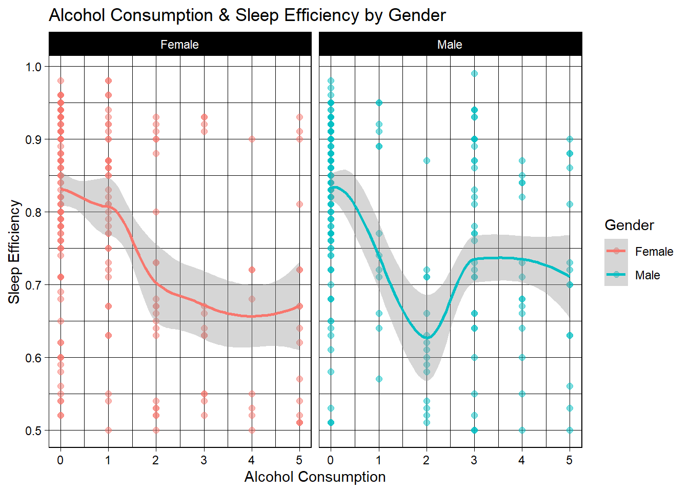
These results show, generally speaking, there is a trend that shows more alcoholic drinks translating to less sleep efficiency for both males and females. Males do show a resurgence in sleep efficiency from 2 to 3 drinks, but it starts to diminish again after 3/4. The way I interpret this is that women in the sample all experience reduced sleep efficiency the more they drink, but for men, two drinks actually sees the nadir of sleep efficiency.
Perhaps because the mind often becomes more active off of 1-2 drinks, men are experiencing increased mental stimulus and activity, making it harder to sleep. Then as they get up to 3-4 drinks (likely a bit drunk and relaxed), efficiency goes back up, but still not as high as it would be with no drinks. Next, I’ll look at the same thing for caffeine.
n_sleep %>%
ggplot(aes(Caffeine.consumption,Sleep.efficiency, color=Gender))+
geom_point(size=2, alpha = 0.5)+
geom_smooth()+
facet_wrap(~Gender)+
labs(x='Caffeine Consumption', y='Sleep Efficiency') +
theme_linedraw()+
labs(title="Caffeine Consumption & Sleep Efficiency by Gender")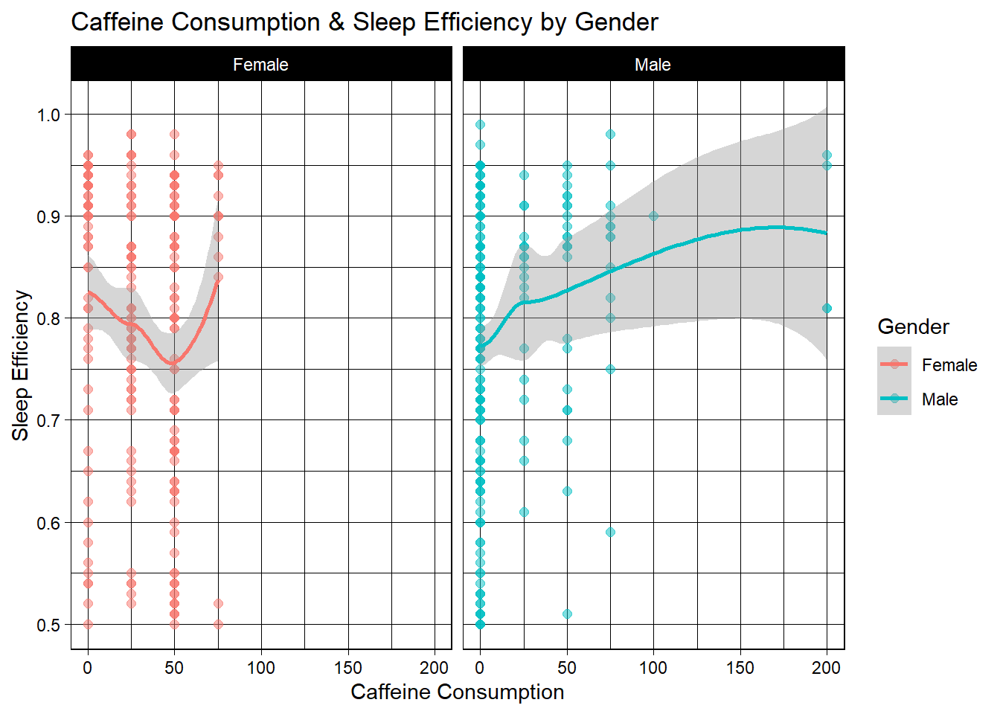
These are interesting results. For females, the most caffeine any of these high-efficiency-sleeping women consume a day is 75mg, and most consume less. For the few young women who do consume 75mg, their average sleep efficiency is the highest. I would be inclined to surmise that caffeine effects them little, or they drink it only in the early morning.
For men, most consume none, but oddly, as consumption increases, so too does sleep efficiency. Again though, much likely has to do with time of day caffeine is consumed, so I am inclined to once again believe these individuals aren’t effected much by caffeine, so are able to consume more. Overall though, all of these high-efficiency-sleepers consume a reasonable amount, and sleep very well. Thirdly, we’ll look at exercise. How often are these efficient sleepers exercising?
n_sleep %>%
ggplot(aes(Exercise.frequency,Sleep.efficiency, color=Gender))+
geom_point(size=2, alpha = 0.5)+
geom_smooth()+
facet_wrap(~Gender)+
labs(x='Exercise Frequency', y='Sleep Efficiency') +
theme_linedraw()+
labs(title="Exercise Frequency & Sleep Efficiency by Gender")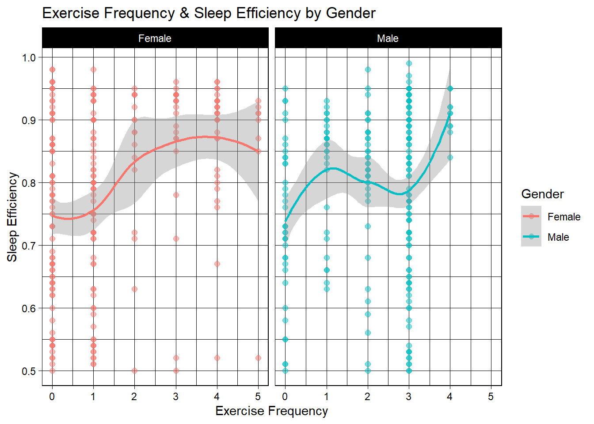
Of this subset of efficient sleepers, the least efficient are those who do no excessive at all. For women, the most efficient sleepers appear to exercise between 3-4 times per week. For men, The maximum amount of days these efficient sleepers exercised was 4 days. 4 days also led to maximum sleep efficiency at over 0.9. So, it appears for both men an women, although they follow different paths to get there, four days of exercise yields maximum sleep efficiency.
Lastly, I will take a look at awaken category and smoking category. First, I will use n_sleep data set to look at all awakenings, then filter for smoking and see if the trends change. I would imagine those who smoke wake up more often because their body is craving nicotine/.
library(ggthemes)
n_sleep %>%
drop_na(Awakenings) %>%
ggplot(mapping = aes(x=Awakenings))+
labs( title = "Awakenings for 21-35")+
geom_histogram(fill = "maroon", alpha = 0.85,
bins = 12.5) +
theme_economist()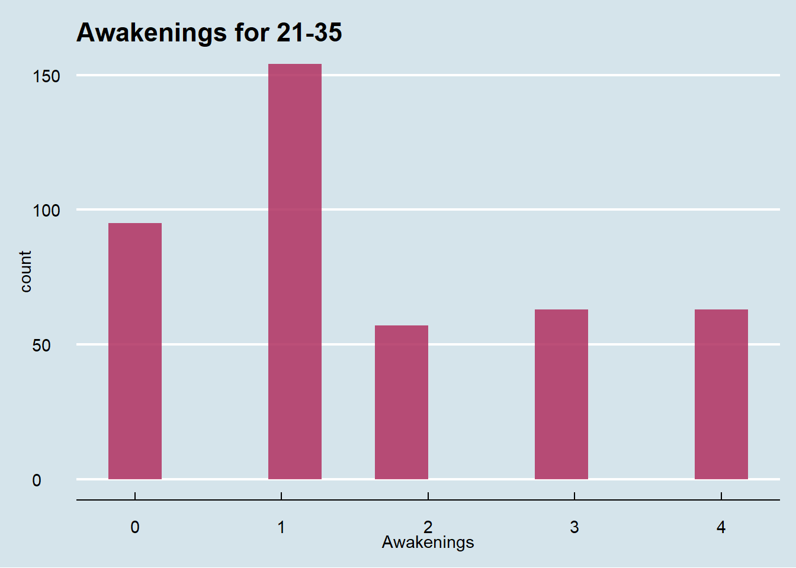
For the whole sample, we see a bit of a spread, but people mainly in between 0-1 awakening. There are about 75 individuals who wake up more than once.
n_sleep <- n_sleep %>%
mutate(Smoking.status = ifelse(Smoking.status == "No",0,1))
n_sleep %>%
filter(Smoking.status == "1") %>%
drop_na(Awakenings) %>%
ggplot(mapping = aes(x=Awakenings))+
labs( title = "Awakenings for All 21-35 Smokers")+
geom_histogram(fill = "maroon", alpha = 0.85,
bins = 12.5) +
theme_economist()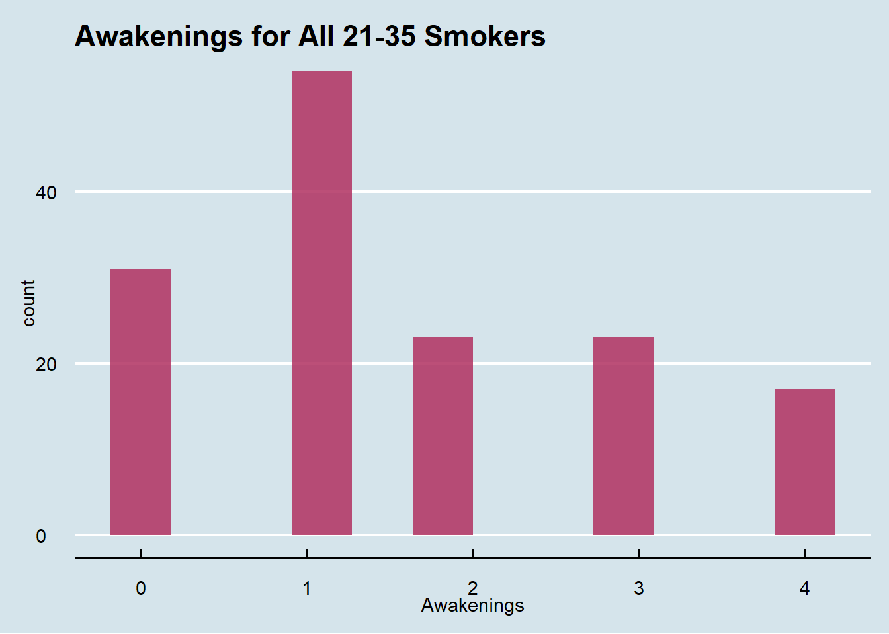
Interestingly, smoking seems to not have the effect I had anticipated it might, with the majority (~30) waking between 0-1 times, and ~20 waking up between 2-5 times. This implies a moderately similar graph in the non-smokers as well, as there was limited change in trend from the entire sample to this smoker-subset.
Conculsion
In general, young adults (aged 21-35) saw enhanced sleep efficiency (proportion of time spent in bed actually spent asleep) when they had higher exercise rates and lower alcohol consumption (with the male 2-3 drink caveat). The fact 2-3 drinks promotes slightly better sleep in men is not a promotion or sign to go drink alcohol every night. The evidence against caffeine and smoking was inconclusive, but many high efficiency sleepers did in fact smoke and have limited awakenings. Also, many caffeine consumers were high-efficiency sleepers. One question regarding alcohol and caffeine I would need to form a greater argument for correlation would be time of day the caffeine or alcohol was consumed.